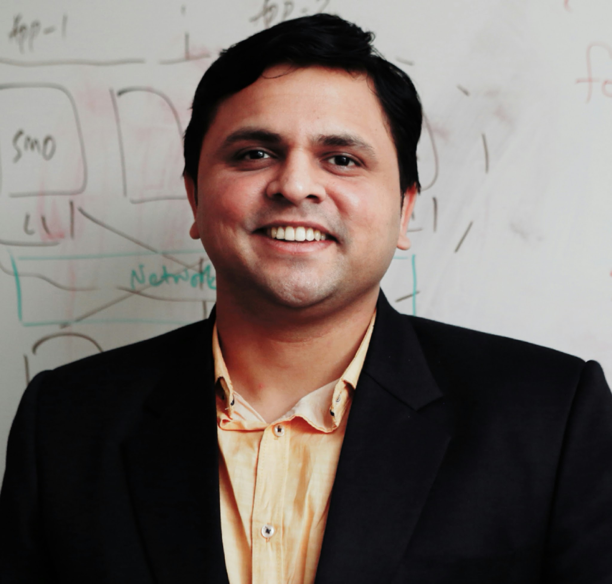

Welcome to Adwait's Homepage
|  | Adwait Jog, Ph.D. (Penn State)Assistant ProfessorDepartment of Computer ScienceCollege of William & MaryMcGlothlin-Street Hall 111Williamsburg, VA 23187
|
About
I am an assistant professor in the Department of Computer Science
at College of William & Mary (W&M) in Virginia, USA. At W&M, I
am leading the Insight Computer Architecture Lab. Our
goal is to generate insights, which would help in architecting future computers that are
more energy-efficient, capable, reliable, and secure.
I am always looking for self-motivated and talented students to join my lab. We have several funded RA positions. Send me a brief email to start the conversation. All graduate admissions are formally managed by W&M CS department.
Recent News
I gave three talks in India at Intel Labs, Microsoft Research, and Indian Institute of Science (IISc) related to our recent MICRO and HPCA 2018 papers.
I will be co-chairing (with Onur Kayiran) the 12th Workshop on General Purpose Processing Using GPU (GPGPU 2019) to be held with ASPLOS 2019. Preliminary website is up.
I am invited to serve on the Sigmetrics 2019, ICCD 2019, and HPDC 2019 program committees, and HPCA 2019 external program committee. Submit your best work!
I gave an invited talk titled “Breaking the Memory Wall in Current and Emerging Accelerators” at the University of Pittsburgh.
Mohamed Ibrahim will be presenting our poster at the ACM SRC competition to be held at MICRO’18. Hongyuan Liu will be presenting our recent MICRO’18 paper on efficiently executing large-scale automata.
Mohamed Ibrahim and Haonan Wang are back in the lab from summer internships at AMD Research and Pacific Northwest National Laboratory (PNNL), respectively. Gurunath Kadam will be completing a co-op at Intel Labs this Fall.
Two papers accepted at MICRO’18. These two papers cover two different topics: a) architectural support for efficient large-scale automata processing, and b) practical GPU reliability analysis. Congratulations to my students and collaborators.
I am serving as a publicity chair for CGO’19. The conference website and call for papers is up!
ACACES 2018 course website is up with the lecture material. This short GPU course is a part of the computer architecture summer school organized annually by HiPEAC.
Research Funding
My research group is currently supported by the following research grants:
NSF CAREER Award 2018. News in the Media. Thanks NSF!
NSF SHF Award 2017. Thanks NSF!
NSF CRII Award 2017. Thanks NSF!
NVIDIA Equipment Donation. Thanks NVIDIA!
Selected Publications (complete list)
(MICRO 2018) Architectural Support for Efficient Large-Scale Automata Processing
(MICRO 2018) Fault Site Pruning for Practical Reliability Analysis of GPGPU Applications
(HPCA 2018) Efficient and Fair Multi-programming in GPUs via Effective Bandwidth Management
(HPCA 2018) RCoal: Mitigating GPU Timing Attack via Subwarp-based Randomized Coalescing Techniques
(ASPLOS 2018) MASK: Redesigning the GPU Memory Hierarchy to Support Multi-Application Concurrency
(HPCA 2017) Controlled Kernel Launch for Dynamic Parallelism in GPUs
(MICRO 2016) Zorua: A Holistic Approach to Resource Virtualization in GPUs
(PACT 2016) Scheduling Techniques for GPU Architectures with Processing-In-Memory Capabilities
(PACT 2016) μC-States: Fine-grained GPU Datapath Power Management
(SIGMETRICS 2016) Exploiting Core Criticality for Enhanced GPU Performance
(MICRO 2014) Managing GPU Concurrency in Heterogeneous Architectures
(PACT 2014) Trading Cache Hit Rate for Memory Performance
(PACT 2013) Neither More Nor Less: Optimizing Thread-level Parallelism for GPGPUs
(ISCA 2013) Orchestrated Scheduling and Prefetching for GPGPUs
(ASPLOS 2013) OWL: Cooperative Thread Array Aware Scheduling Techniques for Improving GPGPU performance
(DAC 2012) Cache Revive: Architecting Volatile STT-RAM Caches for Enhanced Performance in CMPs
Teaching (complete list)
I will be teaching CSCI 424/524, Computer Architecture (undergraduate course) in Fall 2018
Program and Organization Committees (complete list)
Publicity Chair, CGO 2019
Invited to be on the Program Committees of Sigmetrics 2019, HPCA 2019 (ERC), ICCD 2018, SBAC-PAD 2018, IISWC 2018, NAS 2018. Submit your best work!
Local Arrangements Chair, ASPLOS 2018
Outreach
Co-organized second version of the workshop on minimizing data movement (Min-Move 2018). It was co-located with ASPLOS 2018.The workshop was a great success.
Delivered a talk titled Computer Science: Myths, Challenges, and Opportunties to high school students attending Focusing on the Future (FOF) conference organized by School of Education, W&M.
Co-organized a workshop on minimizing data movement (Min-Move 2017) co-located with PACT 2017. The workshop was a great success.
Delivered as a talk on Career Opportunities in CS to middle school students attending Focusing on the Future (FOF) conference organized by School of Education, W&M.